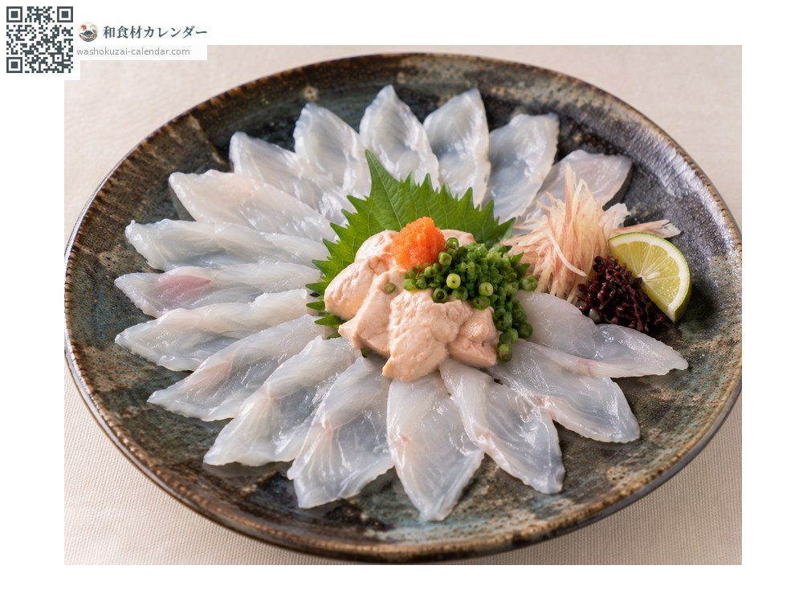
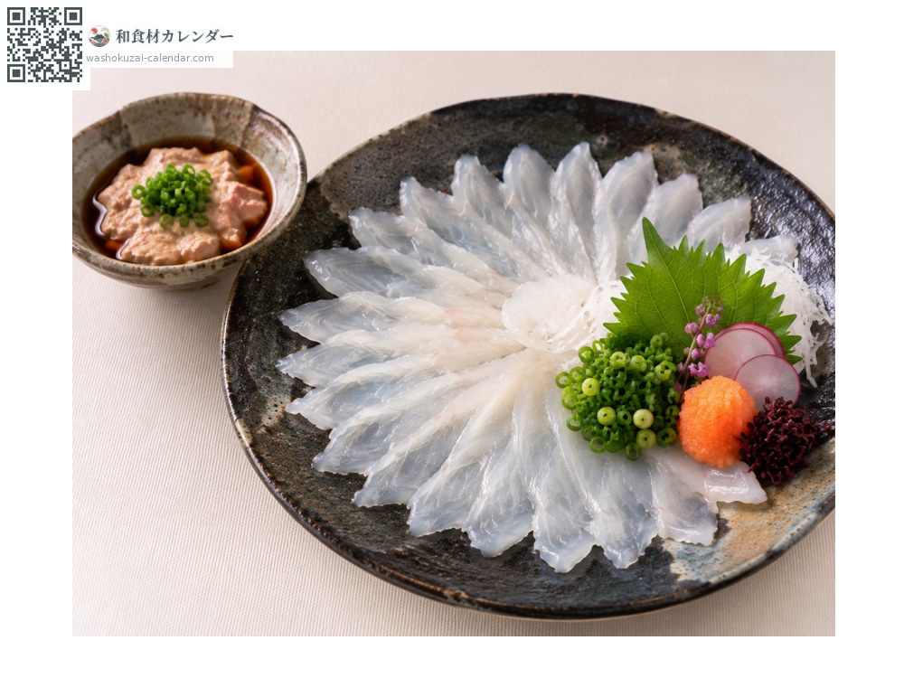
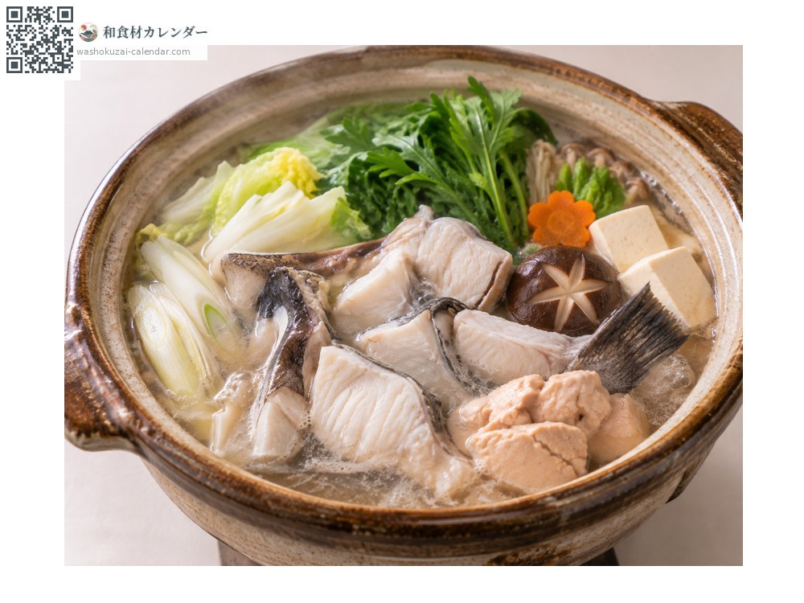
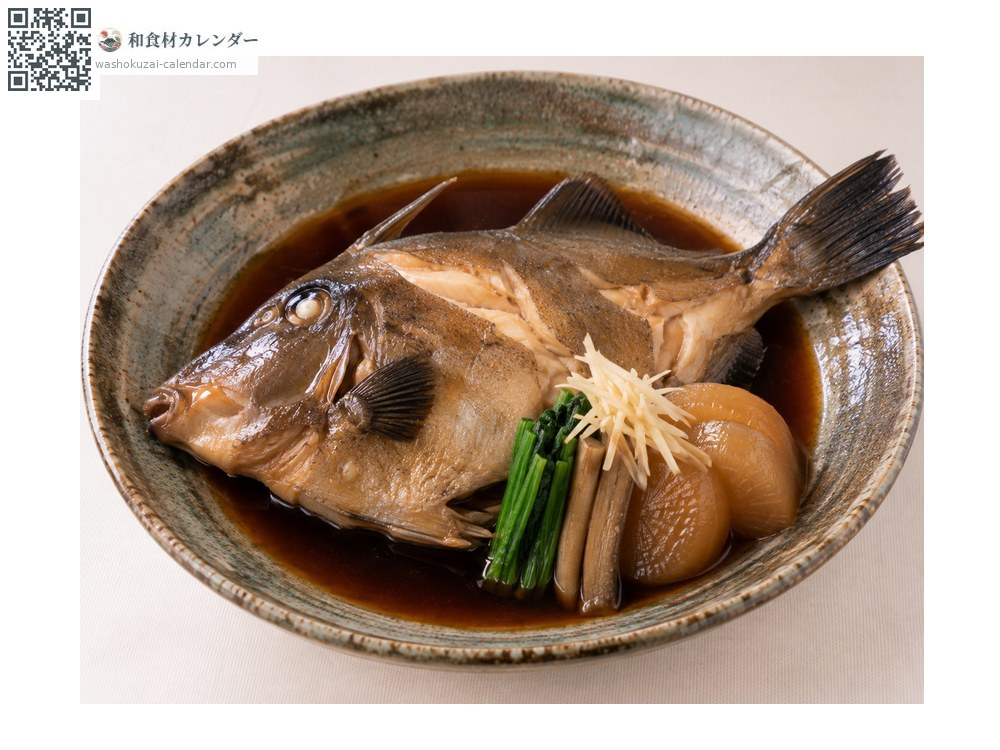

Seafood
Black scraper
ウマヅラハギ うまづらはぎ umazurahagi
Also known asumazurahagi, umazura
At its best in Jan, Feb, Oct, Nov, Dec

When it is at its best
Jan
Feb
Mar
Apr
May
Jun
Jul
Aug
Sep
Oct
Nov
Dec
In seasonAvailable
How to cook

Dressed with the liver
Thin slices dressed with the liver, which is larger and richer than a filefish's.

Sashimi
Sliced thin and dipped in soy sauce mixed with the liver. The flesh is lean and firm.

Nabe (hot pot)
The lean flesh soaks up the broth. The liver can be dissolved in as well.

Nitsuke (simmered in sweet soy)
Simmered in sweet soy. The bones give a good broth.
How to choose
A large, swollen liver, a firm body and clear eyes.
Storage
Skin, gut and refrigerate. Keep the liver separately and use it the same or the next day.
Main areas
Good to know
The long face resembling a horse gives it its name. Cheaper than kawahagi filefish but with a larger liver, so many choose it when the liver is the point.
At their best around the same time
 Pacific saury
Pacific saury Chub mackerel
Chub mackerel Japanese amberjack
Japanese amberjack Skipjack tuna
Skipjack tuna Pacific bluefin tuna
Pacific bluefin tuna Swordfish and marlin
Swordfish and marlin Yellowback seabream
Yellowback seabream Golden threadfin bream
Golden threadfin bream